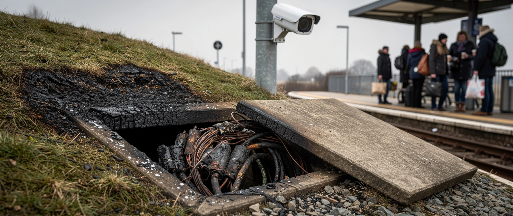

Und jetzt haben wir den Salat

Ein Liter Grillanzünder. Zwei Timer. Ein Kabelschacht an der Nordostecke der Wupperbrücke, ein zweiter zwischen Unterführung und Funkmast.
So steht es im Bekennerschreiben, das am Freitag auf Indymedia erschien und das die Behörden für echt halten. Verantwortlich: das „Kommando Angry Birds“, eine linksextreme Gruppe. Betroffen: die Bahnstrecke Köln–Düsseldorf, eine der meistbefahrenen des Landes, gesperrt bis Samstagabend. Die Bahn spricht von immensen Schäden an den Signalkabeln. Als Motiv nennt die Gruppe „das durch den Fortschritt verursachte Massensterben“ und erklärt, sie strebe die „vollständige Zerschlagung des technologisch-industriellen Systems“ an.
Es ist nicht der erste Anschlag dieser Gruppe. Im Januar 2025 bekannte sie sich zu einem Brandanschlag auf „Düsseldorfs wichtigstes Gleis für den Güterverkehr“. Im Juli 2025 lag die Strecke Düsseldorf–Duisburg tagelang still. Anfang Januar scheiterte ein Anschlag auf das Umspannwerk Erkrath. Dazu kommen Telekommunikationsmasten in Langenfeld und ein Tunnelbrand an der Autobahn 46. Der nordrhein-westfälische Innenminister Herbert Reul hat vor genau dieser Gruppe vor einem Jahr gewarnt.
Gefasst wurde bis heute niemand.
Und welche Lehre zieht der Innenminister aus dem fünften Anschlag? Er zieht sie im Interview mit dem Gebührenfunk, und der Gebührenfunk stellt sie in zwei Zitatkästen aus, ohne eine einzige Nachfrage.
„Nichts ist mehr versteckt. Alles sollte öffentlich sein und jetzt haben wir den Salat!“
Gemeint ist nicht die Gruppe. Gemeint ist die Transparenz über kritische Infrastruktur. Und daraus folgt: Polizei und Verfassungsschutz bräuchten mehr Informationen aus dem Internet, „um vorbereitet zu sein und die Typen erwischen zu können“. Betreiber wie die Bahn müssten prüfen, „wo mehr Videoüberwachung möglich und nötig ist“.
Fünf Anschläge, null Festnahmen, und am Ende steht die Forderung nach mehr Zugriff auf das Netz und mehr Kameras. Es sind dieselben Befugnisse, die vor drei Tagen im neuen Bundespolizeigesetz beschlossen wurden, und dieselben, um die in Brüssel seit Monaten bei der Chatkontrolle gerungen wird.
Der Fachmann für kritische Infrastruktur, den derselbe Beitrag zitiert, sagt etwas anderes. Manuel Atug verweist auf mehrere zehntausend Kilometer Bahnstrecke und darauf, dass die Kabelschächte leicht zugänglich sind. Hundertprozentiger Schutz sei unmöglich. Die Bahn habe zuletzt beim Notfallmanagement Personal entlassen, das sei „Sparen an der falschen Stelle“. Diese Aussage steht in demselben Text wie die Kameraforderung. Sie steht weiter unten.
Eine Gruppe zündet Kabelschächte an, um die Technik abzuschaffen. Die Antwort ist mehr Technik. Nur gerichtet auf die anderen.